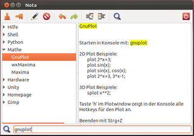

Nota
Archivierte Anleitung
Dieser Artikel wurde archiviert, da er - oder Teile daraus - nur noch unter einer älteren Ubuntu-Version nutzbar ist. Diese Anleitung wird vom Wiki-Team weder auf Richtigkeit überprüft noch anderweitig gepflegt. Zusätzlich wurde der Artikel für weitere Änderungen gesperrt.
Zum Verständnis dieses Artikels sind folgende Seiten hilfreich:
Hinweis:
Die letzte Version von Nota stammt von 2012. (Stand: Februar 2017). Ein Nachfolger ist Zim.
Nota  ist ein einfacher Outline-Editor, der bei der Verwaltung von Notizen hilft. In einer Baumstruktur werden die Artikel hierarchisch angeordnet und mit einem Text beschrieben. Nota wurde von Ralf Hersel in Python geschrieben und steht unter der GPLv3-Lizenz .
ist ein einfacher Outline-Editor, der bei der Verwaltung von Notizen hilft. In einer Baumstruktur werden die Artikel hierarchisch angeordnet und mit einem Text beschrieben. Nota wurde von Ralf Hersel in Python geschrieben und steht unter der GPLv3-Lizenz .
Nota ist der Nachfolger von Archiv/UniTree, dessen Entwicklung eingestellt wurde. Im Gegensatz zu UniTree ist Nota bewusst auf die wesentlichen Funktionen für die tägliche Arbeit reduziert. So gibt es kein Öffnen und Speichern von Dateien und keine Formatierungen des Texts. Nota wurde auch als Reaktion auf die "Zettelwirtschaft" von Tomboy und Gnote entwickelt und beschränkt sich deshalb auf nur ein übersichtliches Programmfenster.
Nota bietet folgende Funktionen:
Suche im Baum
Umordnen der Baumelemente mittels Drag'n'Drop
Volltextsuche im Baum und in den Texten
Import von Tomboy, Gnote und UniTree
Export zu HTML
Komfortable Bedienung durch Reduktion auf das Wesentliche:
Keine Dateiverwaltung: Nota speichert alle Daten in einer XML-Datei
Fokus liegt auf dem Inhalt: Nota unterstützt keine Textformatierung
Automatisches Fortführen der Einrückungen von Textzeilen und Textblöcken
Automatisches Fortführen von Aufzählungszeichen vor Textzeilen
Ganze Textzeilen löschen
Aktuelles Datum in den Text einfügen
Undo/Redo in den Texten
Speichern auf Wunsch (für Übervorsichtige)
Wiederherstellen der letzten Sitzung
Wiederherstellen seit dem letzten Speichern
Installation¶
Das Programm ist nicht in den offiziellen Paketquellen enthalten.
PPA¶
Für Ubuntu 11.10 und 12.04 kann das "Personal Package Archiv" (PPA) [1] des Entwicklers zur Installation genutzt werden.
Adresszeile zum Hinzufügen des PPAs:
ppa:ralf.hersel/rhersel-ppa
Hinweis!
Zusätzliche Fremdquellen können das System gefährden.
Ein PPA unterstützt nicht zwangsläufig alle Ubuntu-Versionen. Weitere Informationen sind der  PPA-Beschreibung des Eigentümers/Teams ralf.hersel zu entnehmen.
PPA-Beschreibung des Eigentümers/Teams ralf.hersel zu entnehmen.
Damit Pakete aus dem PPA genutzt werden können, müssen die Paketquellen neu eingelesen werden.
Nach dem Aktualisieren der Paketquellen kann das folgende Paket installiert [2] werden:
nota (ppa)
 mit apturl
mit apturl
Paketliste zum Kopieren:
sudo apt-get install nota
sudo aptitude install nota
Bedienung¶
Die Bedienung von Nota ist weitgehend intuitiv. Eine ausführliche Hilfe erklärt alle Funktionen. Die folgende Tabelle zeigt die wichtigsten Bedienschritte:
| Bedienung | |
| Aktion | Tastenkürzel |
| Geschwister-Element im Baum hinzufügen | Strg + N oder Pfeil-Unten-Taste in der Werkzeugleiste |
| Kind-Element im Baum hinzufügen | Strg + M oder Pfeil-Rechts-Taste in der Werkzeugleiste |
| Baumelement löschen | Ein Klick auf das Löschen-Symbol in der Werkzeugleiste entfernt das markierte Element aus dem Baum |
| Daten speichern | Strg + S speichert die aktuellen Daten |
| Ast im Baum öffnen/schließen | Klick auf Pfeil vor dem Baumelement oder Doppelklick auf Baumelement |
| Name eines Baumelements ändern | F2 oder Klick auf Stift-Symbol in der Werkzeugleiste |
| Einrücken einer Textzeile | Tab ⇆ drücken; die Einrückung wird in der nächsten Zeile fortgeführt |
| Aufzählung im Text | Zeile mit '-' beginnen; die Aufzählung wird in der nächsten Zeile fortgeführt |
| Textblock einrücken | Textblock markieren und mit Strg + I ein- bzw. mit Strg + U ausrücken |
| Aktuelles Tagesdatum einfügen | Drücken von Strg + D fügt das Datum an der Cursor-Position ein |
| Volltextsuche | Strg + F setzt den Cursor in die Suchzeile. Nach Eingabe des Suchtexts wird die Suche mit ⏎ gestartet. Durch erneutes Drücken von ⏎ wird die Suche fortgesetzt. Mit den Tasten Bild ↑ , Bild ↓ kann in den Suchergebnissen geblättert werden. |
| Textzeile löschen | Die aktuelle Textzeile wird mit Strg + K vollständig gelöscht |
| Texteingabe rückgängig machen | Strg + Z macht die Eingabe im aktuellen Textfeld buchstabenweise rückgängig (Undo) |
| Texteingabe wiederholen | Strg + Y macht Strg + Z wieder rückgängig (Redo) |
Speichern der Daten¶
Nota speichert alle Daten (Baum, Texte, Konfiguration) in der XML-Datei ~/.local/share/nota/nota.xml im Homeverzeichnis. Beim Programmstart wird die Sicherungsdatei nota.xml.bac erstellt. Durch die "Restore"-Funktion kann jederzeit auf die Datenlage zu Beginn des Programmstarts zurückgesetzt werden. Während der Arbeit mit Nota ist in der Regel kein Speichern der Daten notwendig. Nota speichert die Daten beim Verlassen des Programms. Trotzdem kennt Nota eine Funktion zum Zwischenspeichern: Strg + S . Das Zwischenspeichern ist nur dann sinnvoll, wenn man häufige Abstürze erwartet oder vor einer Datenänderung, die man wahrscheinlich rückgängig machen möchte. In solchen Fällen kann man mit der "Reload"-Funktion auf die Daten der letzten Speicherung zurücksetzen.
Nota auf mehreren Computern verwenden¶
Möchte man eigene Notizen auf mehreren Computern verwenden, empfiehlt sich die Synchronisation der Nota-Daten mittels eines Cloud-Dienstes. Diese sind im Verzeichnis ~/.local/share/nota/ enthalten.
 Übersichtsartikel
Übersichtsartikel- Erstellt mit Inyoka
-
 2004 – 2017 ubuntuusers.de • Einige Rechte vorbehalten
2004 – 2017 ubuntuusers.de • Einige Rechte vorbehalten
Lizenz • Kontakt • Datenschutz • Impressum • Serverstatus -
Serverhousing gespendet von